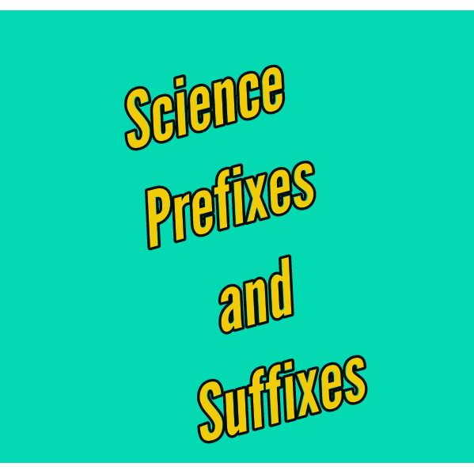

Common Science prefixes and suffixes
This article brings you the main prefixes and suffixes used in science and their meaning. Most of them are also used in general grammar. We have also considered those used in the metric system.
Prefixes
I am quite assured that you already know what a prefix is. A prefix is an affix placed before the stem of a word. pre in prefix is a prefix for instance.
| Prefix | Meaning | Examples |
|---|---|---|
| anti- | against | antibiotic, antibacteria |
| atmo- | vapor | atmosphere, atmometer |
| chromo- | color | chromosome, chromogen |
| exo- | outside | exocarp, exothermic |
| epi- | upon/ on/ near | epiblema, epicentre |
| hydro- | water | hydrophobic, hydrophylic |
| hyper- | exaggerated/ abundant | hyperlink, hyperopia |
| homo- | same | homosapien, homonuclear |
| inter- | between | interocular, interbrain |
| infra- | beneath | infrared, infrasonic |
| hypo- | under/ below | hypothermia, hypochlorite |
| macro- | large | macrobiotic, macroscopic |
| micro- | small | microscope, microbiology |
| mono- | one/ singular | monolayer, monoatomic |
| photo- | light | photocell, photography |
| sub- | under | subharmonic, subacute |
| therm- | heat | thermometer, thermocouple |
| trans- | across | transistor, translocate |
| tri- | three | triangle, trisection |
| uni- | one | unicycle, unicode |
| di- | double/ two | dioxide, diphenol |
| tetra- | four | tetragon, tetravalent |
| nano- | one billionth | nanotube, nanometer |
| milli- | one thousandth | millimeter, milliampere |
| centi- | one hundrendth | centimeter, centigram |
| kilo- | one thousand | kilogram, kilometre |
| mega- | one million/ big | megawatt, megabyte |
| giga- | one billion | gigahertz, gigavolt |
| tera- | one trillion | terabyte, terahertz |
| endo- | within | endoplasm, endocarp |
| hemi- | half | hemisphere, hemiparasite |
| hetero- | different | heterocyclic, heterocycle |
| poly- | many/ much | polymer, polyatomic |
| iso- | equal | isomer, isotope |
| tele- | distant | television, telephone |
| Prefix | Meaning | Examples |
Suffix
A suffix is an affix placed after the stem of a word
| Suffix | Meaning | Examples |
|---|---|---|
| -meter | device for measuring | voltimeter, ammeter |
| -scope | instrument for seeing | microscope |
| -sphere | round | hemisphere |
| -logy | study of | zoology |
| -lysis | loosening/ separation | hydrolysis |
| -itis | infection/ condition | Arthritis |
| -osis | infected with | tuberclosis, hypnosis |
| -penia | defiency of something | cytopenia |
| -stasis | stationary condition | homeostasis |
| -escent | becoming | deliquescent |
| -verge | turn | converge, diverge |
| Suffix | Meaning | Examples |